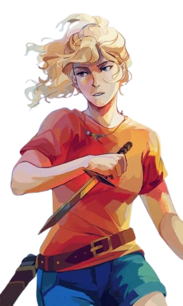

Annabeth Chase é uma das personagens mais importantes da franquia "Percy Jackson e os Olimpianos". Filha de Atena, a deusa da sabedoria e estratégia, Annabeth é conhecida por sua inteligência excepcional, coragem e espírito aventureiro. Desde pequena, ela vive no Acampamento Meio-Sangue, onde treinou para enfrentar monstros e sobreviver aos perigos do mundo mitológico escondido entre os humanos. No acampamento ela é visto como referência, uma das semideusas mais fortes que estão no acampamento. Muito reconhecida por sua sabedoria e visão estratégics
Annabeth Chase é uma das personagens mais importantes da franquia "Percy Jackson e os Olimpianos" é conhecida por sua inteligência, estratégia e coragem em batalha. Como filha de Atena, a deusa da sabedoria, ela possui uma mente extremamente analítica e sempre busca resolver problemas através da lógica e do planejamento. Além de grande guerreira, Annabeth também demonstra talento para arquitetura e liderança, se tornando uma das semideusas mais respeitadas do Acampamento Meio-Sangue. Durante suas missões, ela prova inúmeras vezes sua capacidade de tomar decisões rápidas mesmo diante de situações perigosas. Sua determinação e confiança fazem dela uma peça essencial em diversas profecias importantes do Olimpo. Apesar de sua personalidade forte, Annabeth também demonstra grande lealdade e carinho pelas pessoas que ama, especialmente por Percy Jackson e seus amigos.
Ao lado de Percy Jackson, Annabeth Chase participou de diversas missões perigosas que decidiram o destino do Olimpo. Sua lealdade, determinação e coragem fizeram dela uma peça fundamental nas grandes profecias dos deuses. Mesmo diante de monstros, titãs e batalhas impossíveis, Annabeth nunca desiste daqueles confiança, parceria e companheirismo. Apesar das diferenças entre os dois — Percy sendo mais impulsivo e Annabeth mais estratégica — ambos sempre conseguem se complementar em batalha e nos momentos mais difíceis. A relação entre eles se torna uma das mais marcantes da franquia, mostrando que juntos conseguem enfrentar até os maiores desafios impostos pelos deuses e pelo destino.